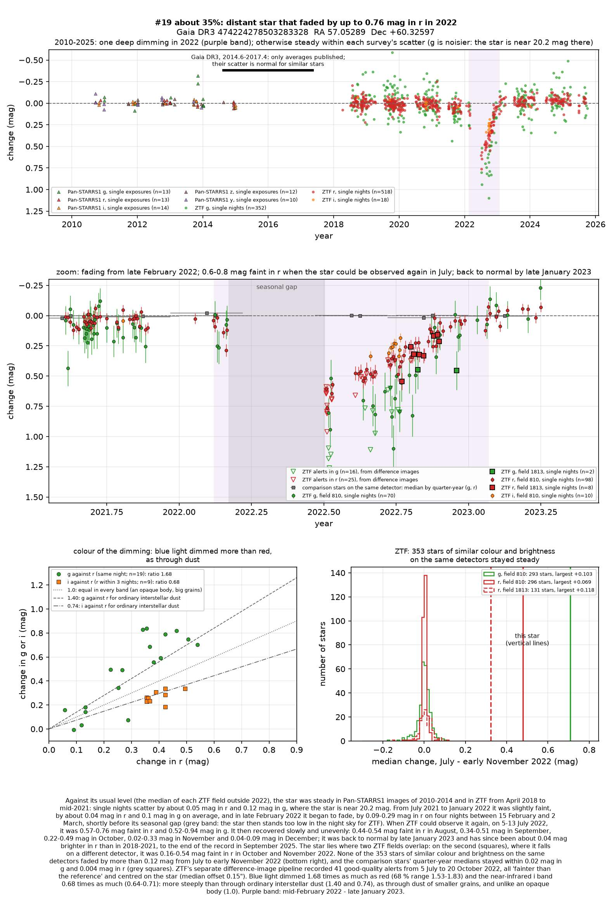
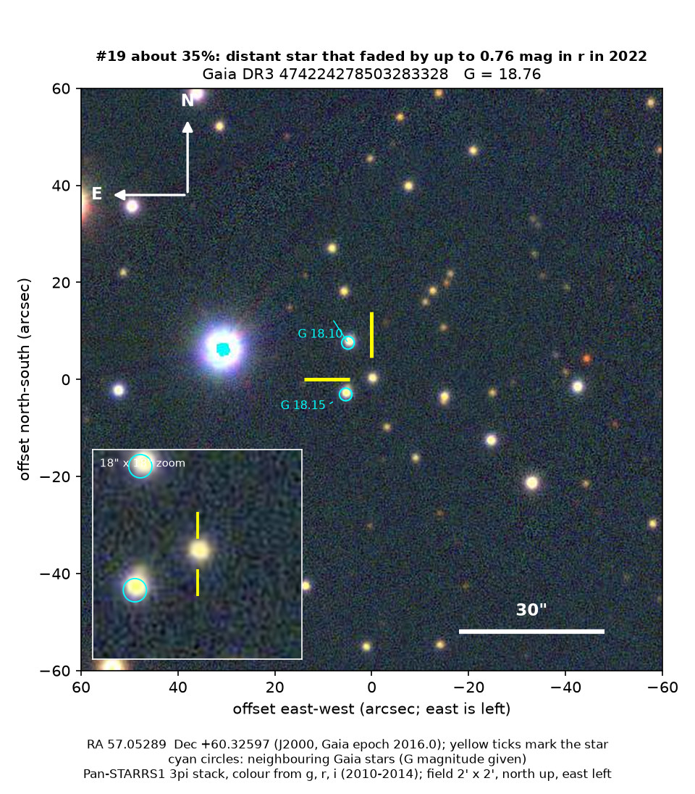
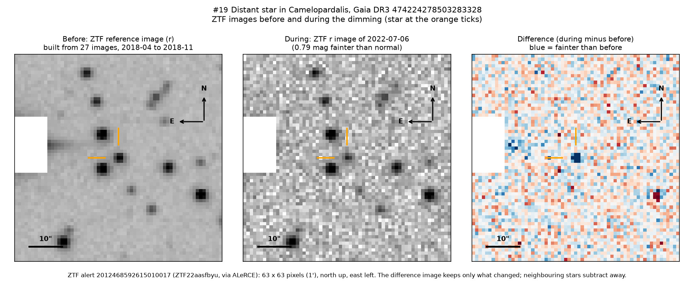

Professor of Mathematics
Paata Ivanisvili
Department of Mathematics, University of California, Irvine

Candidate 19: a distant star that lost up to half of its light in 2022
Why this estimate. The dimming is certain: ZTF, a survey telescope at Palomar Observatory in California, recorded it on two detectors and in three filters, while none of 353 similar stars on the same detectors faded by more than 0.12 magnitudes. The estimate is not higher because only ZTF saw it; the main fade, and perhaps the deepest point, fell while the star was too low in the night sky to observe; its type and distance are uncertain; it lies where young stars with dusty discs are common; and there is no spectrum.
How to read the pictures. The finder chart shows a patch of sky two arcminutes across, about a fifteenth of the Moon’s width, with north up and east to the left. The star sits between the two yellow ticks, and the white bar is 30 arcseconds long. On a light curve the vertical axis is magnitude, a brightness scale on which larger numbers mean fainter stars, and it is drawn so that down means fainter. Purple shading marks the dimming, and grey shading the months when the star could not be observed. Each survey uses slightly different filters, so each is compared with its own normal level. The ZTF pictures show ZTF’s reference image of the star, an image taken during the dimming, and the difference between the two, in which only what changed remains: blue means fainter and red brighter.

What changed. This faint star in Camelopardalis lies about 2,500 parsecs (8,000 light-years) away and is most likely a Sun-like or slightly cooler star seen through much dust. Steady from 2010 to mid-2021 and very slightly faint for the next half-year, it began to fade in earnest in late February 2022, just before its yearly spell too low in the night sky to observe. When ZTF could see it again, on 5 to 13 July 2022, it was 0.57 to 0.76 magnitudes faint in red light and 0.52 to 0.94 in green: it had lost up to half of its red light and more than half of its green.
It then recovered slowly and unevenly, changing by up to 0.2 magnitudes from night to night, and was back to normal by late January 2023; it has not dimmed again up to September 2025. ZTF’s alert system flagged the star as fainter 41 times from July to October 2022, always centred on the star rather than on its two brighter neighbours.
Why it might matter. Dust passing in front of the star is the likeliest cause: green light dimmed 1.68 times as much as red, more steeply than through ordinary interstellar dust (about 1.4), while an opaque body would dim all colours equally. Starspots change such a star by only a few per cent, an eclipse by another star lasts hours or days, not a year, and the two detectors rule out an instrumental fault. Young stars are often dimmed for months by their own dusty discs, and this one lies where they are common, but it shows no sign of warm dust close to it; cooler dust farther out cannot be tested. The dust might come from colliding planets or asteroids, or from a disc around an unseen companion. A spectrum would settle the star’s type and could show signs of youth.
No record of the dimming could be found. SIMBAD has no entry for the star, VSX, the variable-star index, has nothing within 30 arcseconds, and Gaia, the European Space Agency’s star-mapping satellite, lists no variability. The star is in no variable-star catalogue checked, nor among the 81 dimming stars that Tzanidakis et al. (2025) found in ZTF data of 2018 to 2023, and no transient report, Gaia alert or paper names it. ALeRCE, which holds ZTF’s alerts, has only machine-generated labels for it.
- Star
- Gaia DR3 474224278503283328, a Sun-like or slightly cooler star behind much dust (type uncertain)
- Location
- RA 57.05289°, Dec +60.32597° (J2000), in Camelopardalis, 4.6 degrees north of the Milky Way’s mid-plane
- Distance
- about 2,500 parsecs (8,000 light-years), within a range of 2,000 to 4,000 parsecs
- Brightness
- Gaia G = 18.76, far too faint for the eye or a small telescope
- Probability
- This candidate is unconfirmed. The percentage under the title is an estimate of the chance that it is a real, previously unrecorded case of the kind described. The estimate has not been checked by outside experts. See the introduction to all fifty-eight candidates.
- Caveat
- There is no spectrum, and Gaia’s models of the star contradict its parallax, the direct measure of distance, so its type and distance are uncertain. Only ZTF recorded the dimming, and the yearly gap hid how fast it faded and how deep it became. Cool dust far from the star cannot be tested, and its slight changes before and after the event are unexplained.

